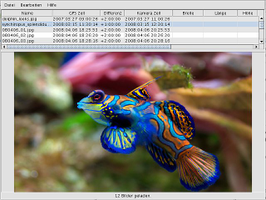

Geotag
Dieser Artikel wurde für die folgenden Ubuntu-Versionen getestet:
Ubuntu 16.04 Xenial Xerus
Ubuntu 14.04 Trusty Tahr
Zum Verständnis dieses Artikels sind folgende Seiten hilfreich:
Wäre es nicht praktisch, wenn Fotos den Ort der Aufnahme enthalten würden? Während früher Papierbilder auf der Rückseite beschriftet werden konnten, lassen sich heute dementsprechende Ortsdaten als sog. Geotags in das jeweilige Bild einbetten. Damit lassen sich diese Daten bequem mit dem Bild aufbewahren und können nicht verloren gehen. Zumindest nicht, solange das Foto noch da ist...
|  |
| Programmoberfläche |
Obwohl derzeit nur wenige Kameras Geodaten mittels GPS direkt ermitteln und schreiben können (Stand: Juli 2012), sind diese Informationen im Exif-Header (Kopfbereich) von Digitalbildern untergebracht. Es gibt eine Reihe von Artikeln, die zum Thema GPS weiterhelfen.
Wer keinen GPS-Logger besitzt, nimmt stattdessen GeoTag  . Mit diesem Programm kann man seine Bilder bequem nachträglich mit Geodaten versehen. Voraussetzung ist allerdings ein Internetzugang, da Karten aus Google Maps
. Mit diesem Programm kann man seine Bilder bequem nachträglich mit Geodaten versehen. Voraussetzung ist allerdings ein Internetzugang, da Karten aus Google Maps  benutzt werden. Man kann das Programm aber auch zur Anzeige der Geodaten nutzen. Neben den Dateiformaten JPG und TIFF werden die speziellen RAW-Formate einiger Kamerahersteller (Liste ) unterstützt.
benutzt werden. Man kann das Programm aber auch zur Anzeige der Geodaten nutzen. Neben den Dateiformaten JPG und TIFF werden die speziellen RAW-Formate einiger Kamerahersteller (Liste ) unterstützt.
Mit Pictag gab es zeitweise eine einfach gestrickte Alternative, die allerdings nur für Ubuntu 12.04 verfügbar war. Empfehlenswert ist auch digiKam, das sowohl die Anzeige als auch das Setzen von Geodaten beherrscht. Weitere Programme sind im Artikel Metadaten/Geokodierung zu finden.
Voraussetzungen¶
Geotag basiert auf Java. Wie man eine Laufzeitumgebung (JRE, ab Version 6) installiert, ist im Artikel Java/Installation beschrieben.
Darüber hinaus werden noch die folgenden Programme benötigt:
libimage-exiftool-perl (universe, siehe ExifTool)
dcraw (optional, zum Umgang mit RAW-Dateien)
gpsbabel (universe, optional, zum Umgang mit GPX-Dateien, siehe GPSBabel)
 mit apturl
mit apturl
Paketliste zum Kopieren:
sudo apt-get install libimage-exiftool-perl dcraw gpsbabel
sudo aptitude install libimage-exiftool-perl dcraw gpsbabel
Zusätzlich braucht es noch einen Webbrowser. Getestet wurden Firefox, Opera, Konqueror und Epiphany. JavaScript muss aktiviert sein.
Online-Nutzung¶
 Statt der nachfolgend beschriebenen Installation auf dem eigenen Rechner kann man auch Java Web Start für Geotag verwenden: geotag.jnlp
Statt der nachfolgend beschriebenen Installation auf dem eigenen Rechner kann man auch Java Web Start für Geotag verwenden: geotag.jnlp  . Dann nutzt man automatisch immer die neueste Version.
. Dann nutzt man automatisch immer die neueste Version.
Installation¶
 Geotag ist nicht in den offiziellen Paketquellen enthalten. Das Programm kann man aber über die Downloadseite des Projekts herunterladen . Während die gepackte Archivdatei geotag-0.0xx.tar.gz den Quellcode enthält, steht geotag-0.0xx.jar für das eigentliche Programm. Normalerweise wird nur letztere Datei benötigt (XX ist durch die jeweils aktuelle Programmversion zu ersetzen).
Geotag ist nicht in den offiziellen Paketquellen enthalten. Das Programm kann man aber über die Downloadseite des Projekts herunterladen . Während die gepackte Archivdatei geotag-0.0xx.tar.gz den Quellcode enthält, steht geotag-0.0xx.jar für das eigentliche Programm. Normalerweise wird nur letztere Datei benötigt (XX ist durch die jeweils aktuelle Programmversion zu ersetzen).
Hinweis!
Fremdsoftware kann das System gefährden.
Gestartet wird das Programm in einem Terminal [2] mit dem Befehl:
java -jar geotag-VERSION.jar
Bei Bedarf kann man sich einen Programmstarter [3] anlegen. Als Symbol lässt sich das obige Logo nutzen.
Einstellungen¶
Unter "Datei -> Einstellungen" lassen sich die Pfade für die externen Anwendungen wie
Webbrowser
ExifTool
GPSBabel und
Dcraw
angeben bzw. kontrollieren. Es gibt noch viele weitere Optionen, die aber nur bei Problemen kontrolliert werden müssen.
Da das Programm einen internen Webserver nutzt, um eine Karte mit Google Maps anzuzeigen, darf eine interne Firewall auf dem verwendeten Computer den Port 4321 nicht blockieren.
Bedienung¶
Entweder öffnet man ein Einzelbild mit "Datei -> Bild hinzufügen..." oder einen kompletten Bilderordner mit "Datei -> Verzeichnis hinzufügen...". Nachdem man ein Bild mit links ( ) ausgewählt hat, lässt man sich mit einen Rechtsklick (
) ausgewählt hat, lässt man sich mit einen Rechtsklick ( ) dieses Bild "auf Karte zeigen". Nun öffnet sich im Hintergrund automatisch ein Browserfenster bzw. -tab mit einer Ortsmarkierung. Nach dem Wechsel zum Browser verschiebt man diese Marke an den Ort der Aufnahme. Dann wechselt man zu Geotag zurück, wo die Ortsmarkierung bereits eingetragen ist. Fertig.
) dieses Bild "auf Karte zeigen". Nun öffnet sich im Hintergrund automatisch ein Browserfenster bzw. -tab mit einer Ortsmarkierung. Nach dem Wechsel zum Browser verschiebt man diese Marke an den Ort der Aufnahme. Dann wechselt man zu Geotag zurück, wo die Ortsmarkierung bereits eingetragen ist. Fertig.
Zusätzlich lassen sich noch die Höhe über NN (Meeresspiegel) und anschließend ein Ortsname über das Kontextmenü () automatisch ermitteln. Sämtliche Angaben können aber auch manuell erfolgen. Gespeichert wird mit "Datei -> Neue Orte speichern". Die Originalfotos werden dabei nicht überschrieben, sondern erhalten den Zusatz _original. Eine Option zum automatischen Überschreiben ist ab Version 0.069 enthalten ("Datei -> Einstellungen -> Externe Programme -> Exiftool -> Beim Speichern Sicherungskopien von Bildern anlegen").
Hinweis:
Beim Beenden des Programmes werden Bilder mit neuen Geodaten nicht automatisch gespeichert! Alle Bilder, die in der Übersicht noch fett markiert sind, sollten vorher gespeichert werden.
Besonders praktisch ist die Möglichkeit, die Geodaten eines Bildes auf die restlichen Bilder eines Ordners zu übertragen. Das gilt auch für den Ortsnamen. Nachdem man ein Bild mit Geodaten versehen hat, kann man diese Daten via Rechtsklick () und "Ort übertragen" bzw. "Ortsnamen -> Übertragen" auf die restlichen Bilder anwenden.
GPS-Tracks¶
GeoTag kann aufgezeichnete Wege (Tracks) auf zwei Arten nutzen: entweder direkt durch Auslesen aus dem GPS-Gerät mit Hilfe von GPSBabel oder unter Nutzung einer externen .gpx-Datei. Da bisher nur das GPX-Format 1.0 verwendet werden kann, muss man unter Umständen einen externen GPX-Track erst konvertieren.
Beispiel einer Umwandlung von GPX 1.1 nach 1.0:
gpsbabel -i gpx -f GPX-1.1-TRACK.gpx -o gpx,gpxver=1.0 -F GPX-1.0-TRACK.gpx
Nun kann man die Track-Daten entweder über "Datei -> Strecken vom GPS laden" oder "Datei -> Strecken aus Datei laden..." einlesen. Die Zuordnung erfolgt über einen Rechtsklick auf ein Bild und die Auswahl von "Ort suchen".
Ein alternatives Programm für diesen Zweck ist FoxtrotGPS
Geodaten nutzen¶
Siehe Metadaten/Geokodierung.
Links¶
Pfadfinder - Reverse Geotagging mit Geotag
- Artikel LinuxUser, 11/2010 GeoSetter
- ähnliches Programm für WindowsGeotagging Source Photos
- OpenStreetMap WikiMetadaten
 Übersichtsartikel
Übersichtsartikel
- Erstellt mit Inyoka
-
 2004 – 2017 ubuntuusers.de • Einige Rechte vorbehalten
2004 – 2017 ubuntuusers.de • Einige Rechte vorbehalten
Lizenz • Kontakt • Datenschutz • Impressum • Serverstatus -
Serverhousing gespendet von